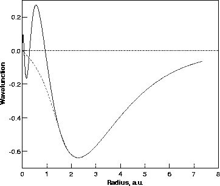

Core wavefunctions are rapidly varying with many nodes, and require a large number of fitting functions to model accurately; pseudopotentials overcome this as the pseudo-wavefunction is smoothly varying and nodeless within a certain core radius. In addition the Coulombic interaction of core states would tend to swamp any total energy calculations trying to compare small differences in valence bond energies. In order to remain orthogonal to the core states, the valence states are also forced to become rapidly oscillating near the atomic core, requiring large numbers of fitting functions to model accurately. Pseudopotentials overcome all of these problems. They become particularly important for the heavier elements when the number of core electrons vastly outweighs the valence electrons. Finally for heavier atoms in which relativistic effects are important, and so the Dirac equation is required, the valence electrons can be treated non-relativistically. Therefore removal of the core electrons allows a non-relativistic approach to be maintained (some corrections are required in the core electron pseudopotentials to account for relativistic effects, see below).
Pseudopotentials assume that the localised core states do not take part in bonding, and so can be incorporated as a change in the charge state of the nucleus. Between the nucleus and some cut-off radius rc, the all-electron valence wavefunctions can be replaced with a smoothed form; beyond this radius the pseudo-wavefunction must be identical to the full all-electron wavefunction. In addition there will still be exchange interactions between core and valence electrons which must be included in the potentials. Finally, if self-consistency is to be easily achieved in the calculations then the potentials must have the correct atomic charge density outside the core (`norm-conserving' pseudo-potentials).
Figure 2.2 shows the radial 4s full- and pseudo- wavefunction for Ni. It can be seen that the rapidly varying core region has been smoothed in the pseudo-wavefunction but beyond the cut-off radius, rc, the pseudo- and all-electron- wavefunctions are identical.
|  |
The pseudopotentials used in AIMPRO come from work done by Bachelet, Hamann and Schlüter [23,26] who produced pseudopotentials for all elements up to Pu. There are four fundamental properties which these pseudo-potentials display:
The last two points are essential if the pseudopotential is to have optimum transferability.